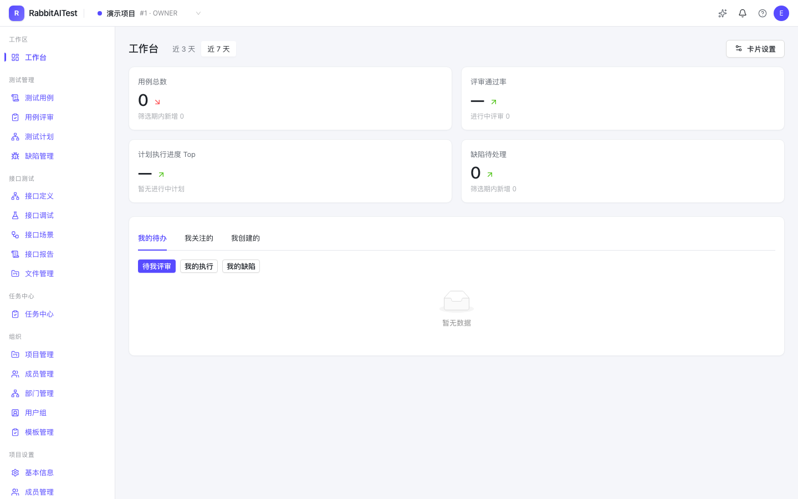

Replicating the MeterSphere v3.x community edition feature set — v1.0 goal: 100% feature coverage
The open-source all-in-one
test platform
RabbitAITest packs test management, API testing, scenario automation, test plans and AI into a single full-stack TypeScript monorepo — embedded PostgreSQL for zero-dependency onboarding, a self-built execution engine with no JMeter dependency. Every feature, metric and screenshot on this page comes from the real repository and a running system.

▲ Real screenshot of a running system (workbench home) — click to zoom